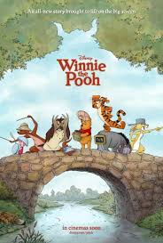
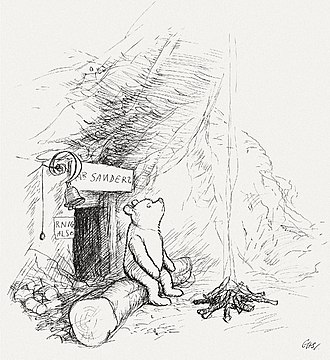
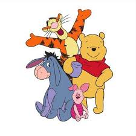
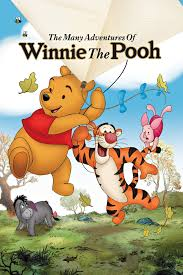

Historia

Winnie the Pooh es un oso de peluche que vive en el Bosque de los Cien Acres, es conocido por su amor por la miel y por sus aventuras con sus amigos como Piglet, Tigger y Eeyore, el personaje fue creado por A. A. Milne y apareció por primera vez en historias infantiles que se volvieron muy populares
Ver más en la Wiki oficialInformación
- Le encanta la miel
- Es amable y amigable
- A veces es un poco distraído
- Siempre ayuda a sus amigos
- Vive en el Bosque de los Cien Acres
- Encontrar miel en el bosque
- Sus aventuras con Piglet
- Las historias con todos sus amigos en el bosque
Ficha técnica
| Edad | Desconocida |
| Peso | Ligero (oso de peluche) |
| Estatura | Pequeño |
| Primera aparición | 1926 |
| Debilidades | Su gran amor por la miel |
| Alias | Pooh |
Registro de fans
Galería


